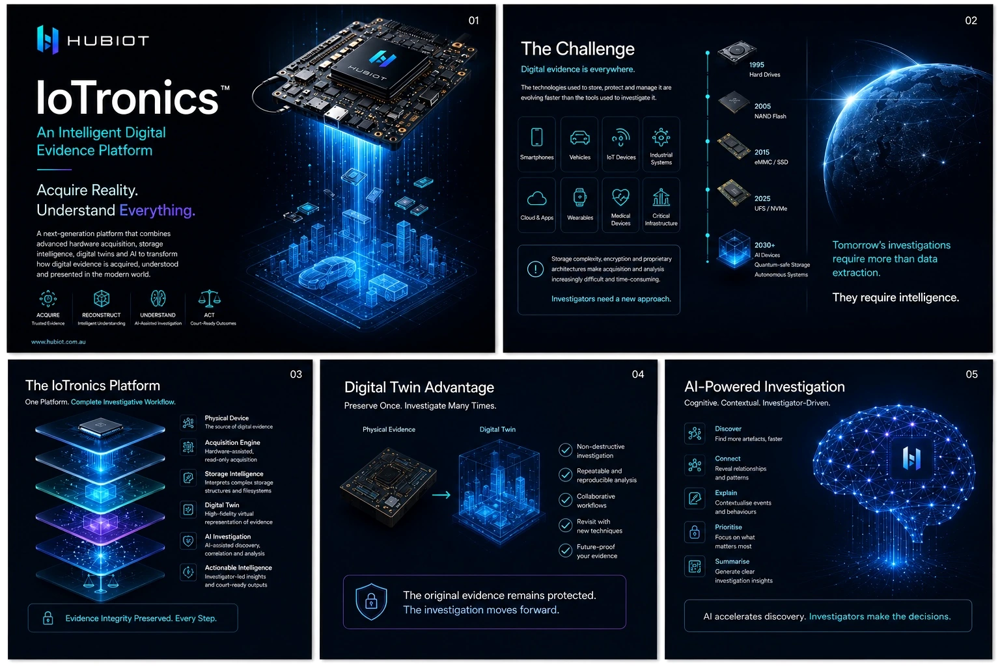
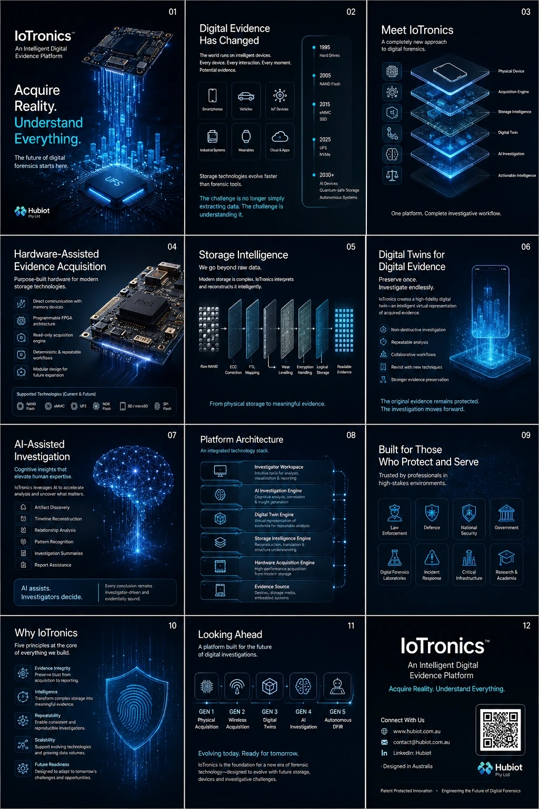
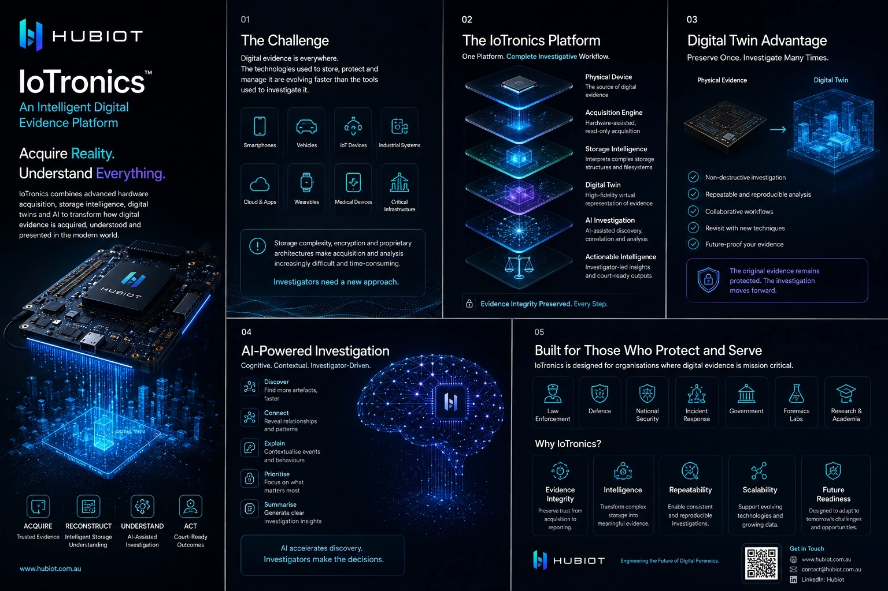
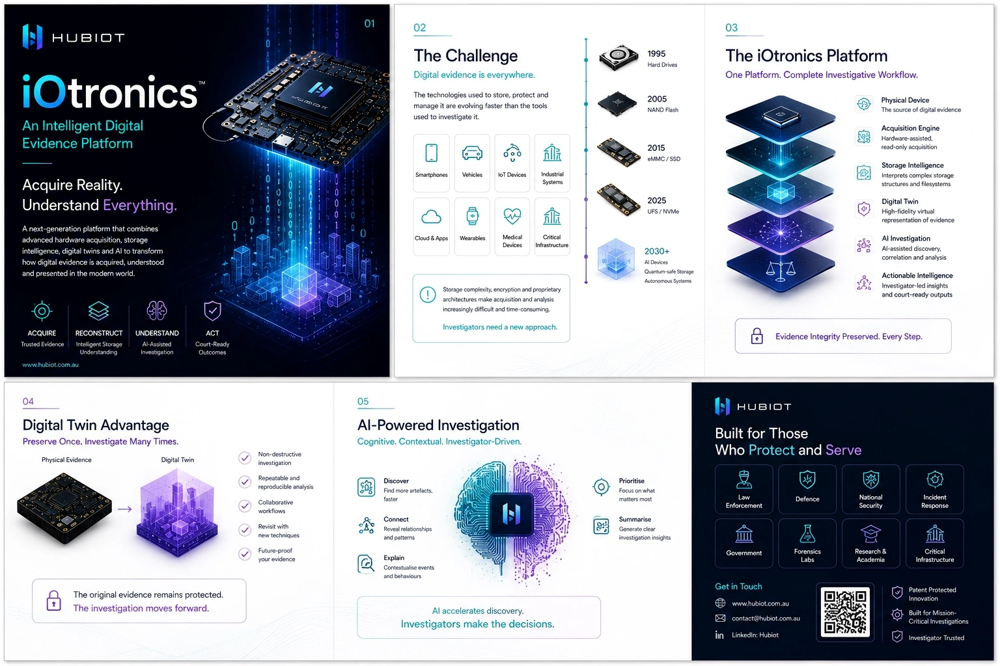
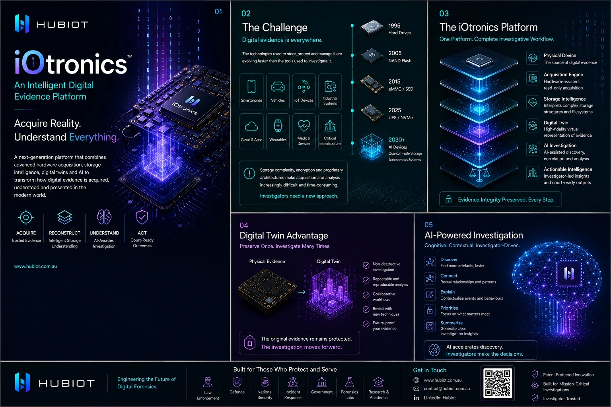
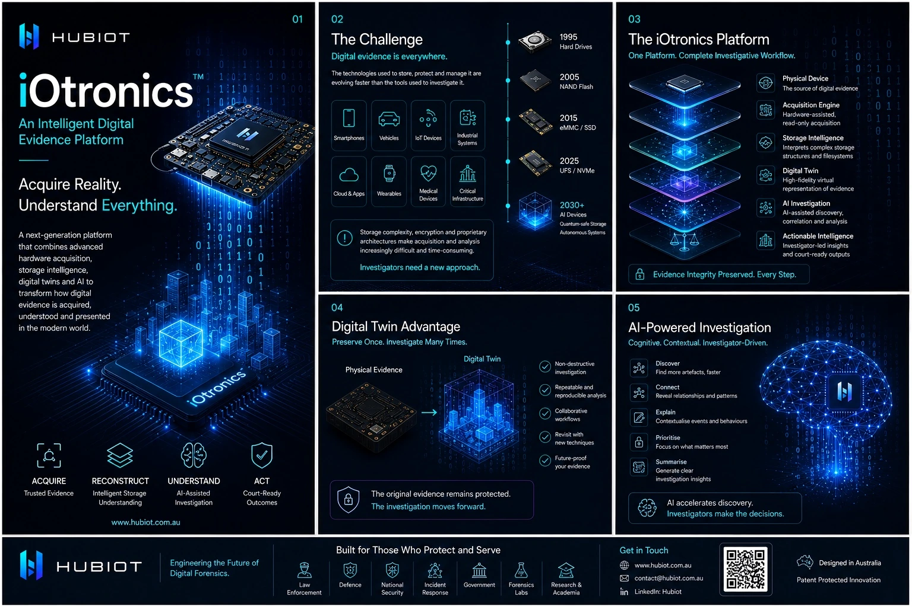

iOtronics
A next-generation platform combining hardware-assisted acquisition, storage intelligence, digital twins and AI-assisted investigation.
Digital evidence is everywhere.
Storage technologies, encryption and proprietary architectures are evolving faster than the tools used to investigate them.
Smartphones
Always-on devices carrying dense evidence.
Vehicles
Distributed evidence across control modules.
IoT & Industrial Systems
Embedded architectures with limited interfaces.
Critical Infrastructure
Mission-critical environments requiring careful acquisition.
One platform. Complete investigative workflow.
Physical device, acquisition engine, storage intelligence, digital twin, AI investigation and actionable intelligence.


Purpose-built for modern storage technologies.
Direct memory communication, programmable FPGA architecture and deterministic read-only workflows.
From physical storage to meaningful evidence.
Raw NAND, ECC correction, FTL mapping, wear levelling, encryption handling and logical reconstruction.

Preserve once. Investigate many times.
Non-destructive investigation, repeatable analysis and collaborative workflows.
Cognitive. Contextual. Investigator-driven.
Discover, connect, explain, prioritise and summarise. AI accelerates discovery; investigators make the decisions.
Designed for mission-critical investigations.
The visual system behind iOtronics.



Evolving today. Ready for tomorrow.
Physical acquisition, wireless acquisition, digital twins, AI investigation and autonomous DFIR form the long-term roadmap.
GEN 1–5
Physical Acquisition → Wireless Acquisition → Digital Twins → AI Investigation → Autonomous DFIR